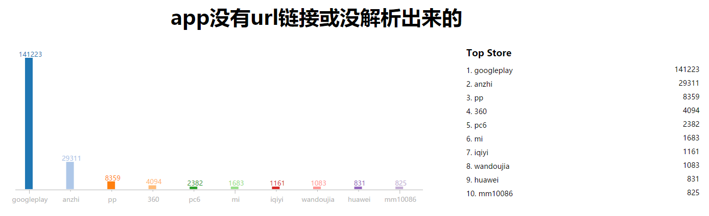

This post is also available in: en
00 https的逐渐普及提高了网站的安全性
http是应用最为广泛的协议了，但由于数据是明文传输的，因此存在一定的安全隐患， 黑客完全可以通过局域网监听获取所有http通讯的数据内容。
https则是通过在tcp层和http层之间增加一个ssl(secure socket layer)来加强安全性，数据传输中，加密解密均由ssl进行。 很明显https是比http更加安全的传输协议，我们也注意到如今大量的网站开始启用https协议，比如广为人知的国人必用的12306的网站。
01 app的安全性究竟怎样呢？
然而现在大量的互联网流量都转向了移动端，更多的人通过手机获取信息、办公或娱乐，而app就是他们进行这些活动的主要载体。
App表面上看是安装在手机上的客户端软件，而要完成以上工作app必须不停的与后台服务器进行数据交互， app与服务器端进行通讯一般都会通过http、https或者某些自定义的协议进行传输。
同样的道理，如果重视用户隐私，应该尽量使用加密的通讯协议才好。
那么我们通过Appinner来看看app的后台通讯的安全性究竟如何吧。
02 app后台通讯协议方式的数据分析
我们的样本总量有142万，首先我们剔除掉不需要进行后台通讯服务的app(嗯，这样的app也是有的) ，一共189938个。

然后我们来看看后台url链接中使用http的有哪些，总共1096290个。
其实很多app都或多或少的会用到https链接，这并不是说它们都有这个觉悟， 更多的原因是它们调用了很多第三方的sdk或api接口，这些第三方的服务采用了https加密通讯的方式 （有时间我们会做一期分析，看看哪些第三方服务在裸奔？）。
好了，让我们看看哪些app的url只采用http的方式在裸奔：
其实裸奔也没啥，关键看你是什么类型的应用，这个更重要：

有些app，申请了很敏感的用户权限，比如读取用户通讯录，但是它们并没有认真的考虑如何保护用户的隐私， 后台通讯全部http的方式裸奔中：
permission:android.permission.READ_CONTACTS url:http not url:https
这些app的总数达到11728个，其中以生活、游戏和工具三大类高居榜首，令人惊讶的是健康穿戴类的app居然也是榜上有名。
但是也有一些app是很注重保护隐私的，他们所有的url均采用了https加密的通讯方式：
都有哪些类型呢：
教育类、娱乐和商业都比较注重保护用户隐私，榜上前三名。